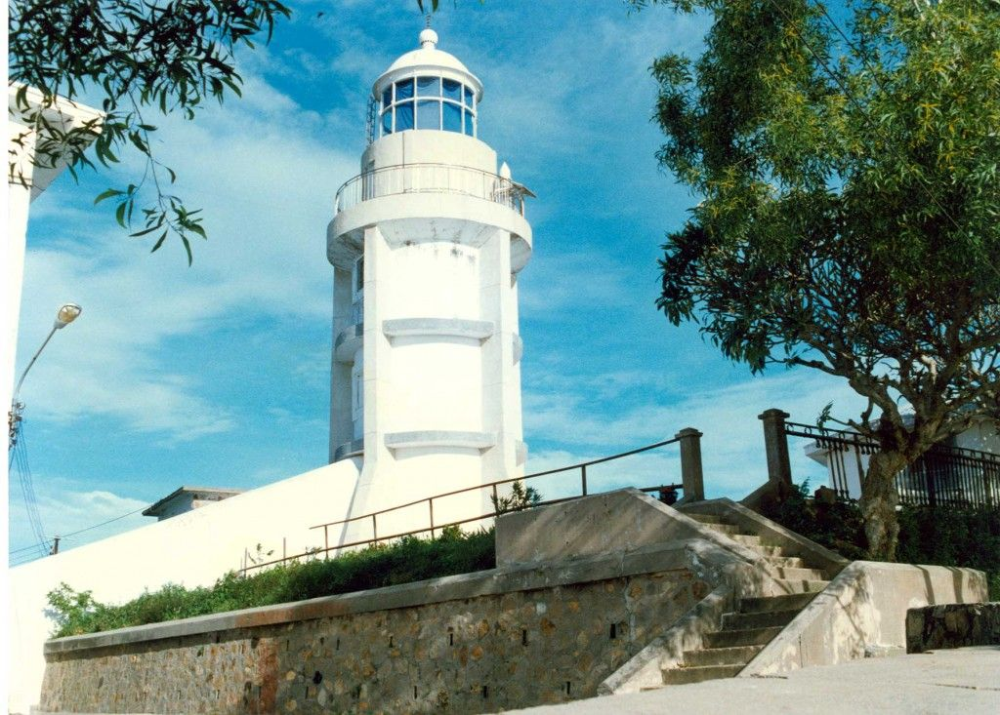

Tượng Chúa Kitô Vua(Tượng Chúa Kitô trên đỉnh Núi Tao Phùng)
Tượng Chúa Kito là một trong những địa điểm tham quan Vũng Tàu nổi tiếng, không thể thiếu trong hành trình của du khách khi du lịch Vũng Tàu, bởi cảm giác chinh phục đầy thú vị tại phố biển sôi động này.
Địa chỉ: Nằm ở Thùy Vân, Phường 2, thành phố Vũng Tàu, Bà Rịa – Vũng Tàu Giờ mở cửa: 07h00 sáng – 17h00 chiềuTượng chúa Kitô trên đỉnh núi Nhỏ (ảnh ST)
1. Đường lên tượng chúa Kitô ở Vũng Tàu
Xe máy, ô tô riêng
Đây là hai loại phương tiện tự túc tiện lợi nhất, các bạn có thể di chuyển vào lúc nào, đi ở đâu, dừng ở đâu tuỳ theo bạn muốn. Để đi từ Sài Gòn đến Vũng Tàu, bạn có 2 cung đường để lựa chọn: đi qua phà Cát Lái sang Nhơn Trạch, đi hướng quốc lộ 51. Nếu đi xe máy, bạn nên chọn đường đi phà Cát Lái vì đường dễ tìm, lại ít ô tô lớn đi sẽ an toàn hơn. Còn đi ô tô riêng, bạn nên đi đường cao tốc Long Thành – Đồng Nai sẽ nhanh hơnXe khách
Đây là loại phương tiện được nhiều hành khách lựa chọn nhất. Bạn có thể bắt xe tại bến xe miền Đông, Sài Gòn đi đến bến xe khách Vũng Tàu. Thời gian di chuyển khoảng 2,5 tiếng, giá vé khoảng 80.000 đồng – 160.000 đồng/ vé tuỳ từng hãng xe. Có một số hãng xe uy tín, chất lượng đến Vũng Tàu như: Phương Trang, Thiên Phú, Rạng Đông, Hoa Mai…Tàu cánh ngầm
Đây là phương tiện di chuyển nhanh nhất, chỉ mất khoảng 1,5 tiếng di chuyển. Nhưng chi phí di chuyển cũng đắt nhất, giá vé khoảng 200.000 đồng/ vé. Bạn có thể mua vé và di chuyển ở bến Bạch Đằng, thành phố Hồ Chí Minh đến bến Cầu Đá, thành phố Vũng Tàu. Có một số hãng tàu mà bạn có thể lựa chọn như: Green Lines, Vina Express,…

Bia đá ghi tên địa điểm ngoài cổng (ảnh ST)
2. Những địa điểm gần tượng chúa Kitô Vũng Tàu
-
Núi Nhỏ
Tượng chúa Kitô nằm trên núi Nhỏ Vũng Tàu, vì vậy nếu đến tham quan tượng chúa Kitô mà không dành chút thời gian để khám phá núi Nhỏ thì quả là đáng tiếc. Núi Nhỏ nằm sát bờ biển, dưới chân núi có nhiều con đường ven biển với hệ thống nhà hàng, khách sạn, quán cafe hiện đại, sang trọng. Núi nhỏ có hai đỉnh, đỉnh cao hơn có ngọn hải đăng toả sáng một vùng trời, đỉnh thấp hơn có tượng chúa KitôNhìn từ trên cao thấy tượng chúa Kitô trên đỉnh núi Nhỏ (ảnh ST)
-
Ngọn hải đăng
Hải đăng Vũng Tàu toạ lạc trên đỉnh núi Nhỏ, được người Pháp xây dựng nhằm mục đích chỉ đường, báo hiệu cho các tàu thuyền qua lại và nằm ở độ cao 149m so với mực nước biển. Hải Đăng Vũng Tàu được đánh giá là một trong những hải đăng cổ xưa nhất Việt Nam và Đông Nam Á. Bên trong ngọn hải đăng có cầu thang dẫn đến gần đỉnh hải đăng và có ban công để ngắm cảnh Ngọn hải đăng Vũng Tàu (ảnh ST)
Tin liên quan: Ngọn hải đăng – địa điểm tham quan thú vị ở Vũng Tàu
Tìm kiếm Tour